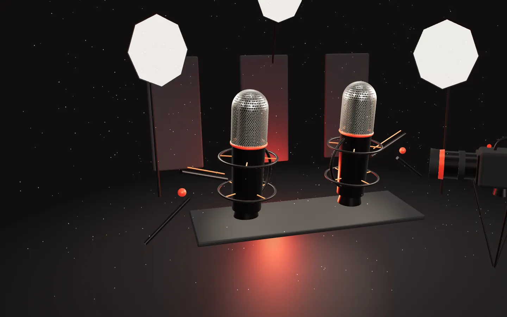
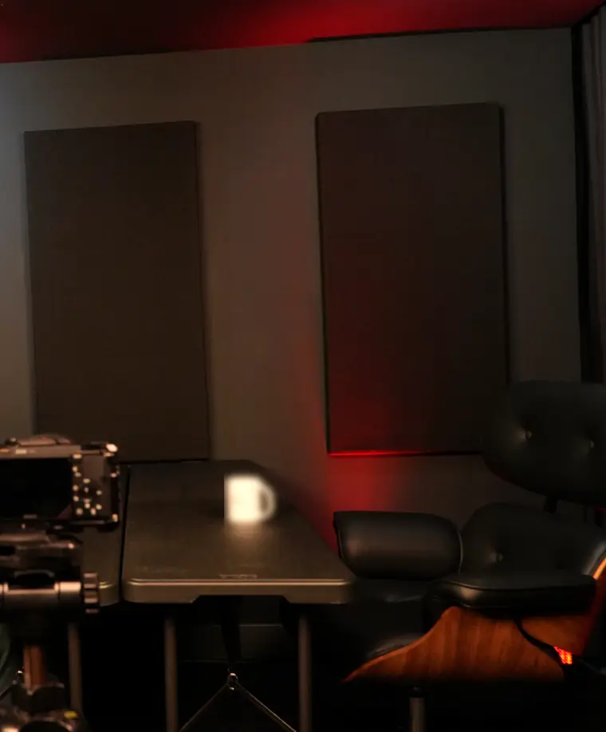
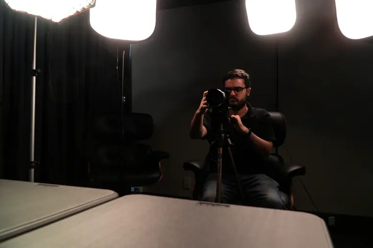
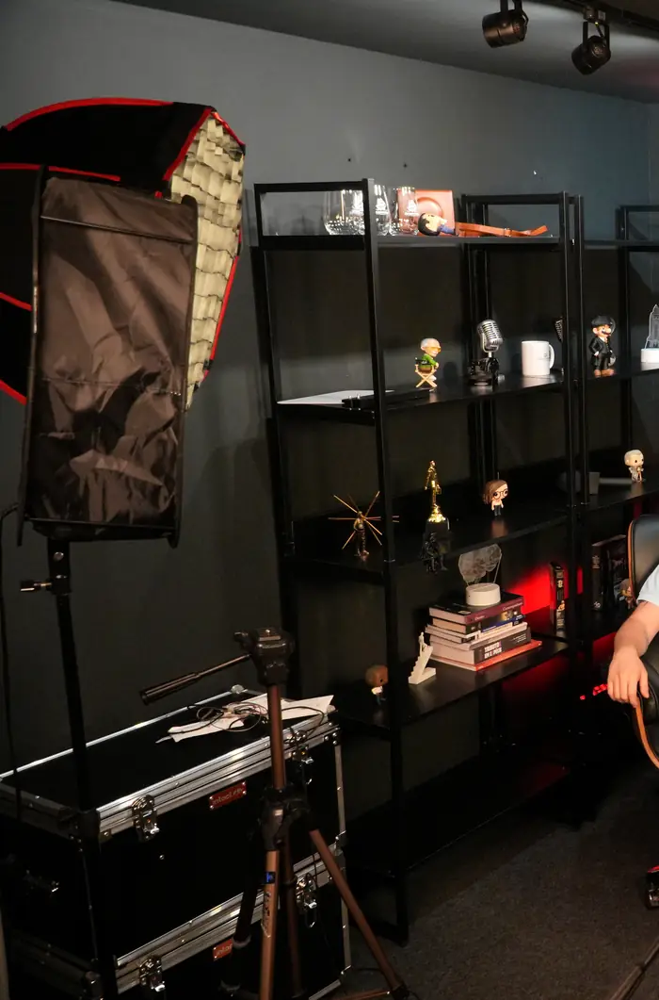
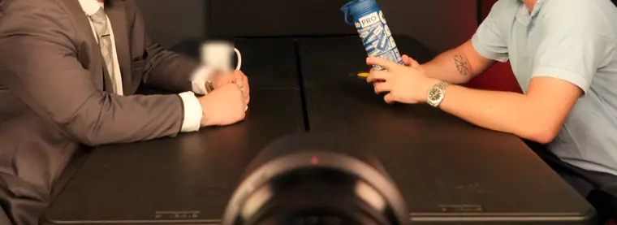
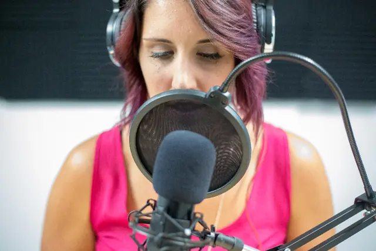
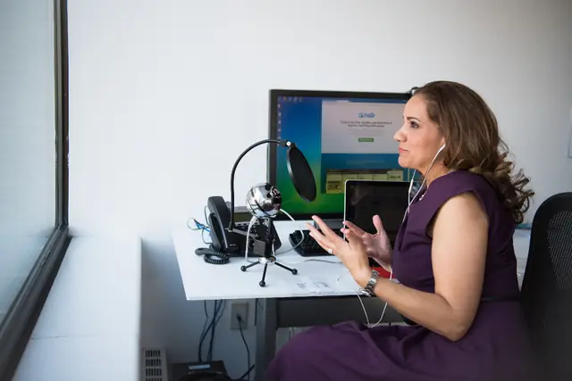

Estúdio de podcast e vídeo no Centro do Rio, com operador incluso
Você chega, senta e fala. Câmeras, microfones, luz e cenário já estão prontos, e um operador cuida da gravação do começo ao fim. Você sai com 1h30 de conteúdo bruto para editar ou publicar.
R$ 497 por 1h30 de gravação, tudo incluso
Resposta pelo WhatsApp. Sem cadastro e sem formulário.
- Operador do início ao fim
- Sala com painéis acústicos
- Vídeo e áudio brutos
Gravar em casa parece barato. Até a primeira gravação.
Quem já tentou sabe: metade do tempo vai em brigar com o equipamento, e o conteúdo fica para depois.
- O eco da sala que aparece no fone
- A luz da janela mudando no meio da fala
- O áudio que estoura quando você ri
- A bateria que acaba no melhor trecho
- Uma hora montando tripé, cabo e microfone
- Você falando e conferindo a gravação ao mesmo tempo
No estúdio, isso tudo já está resolvido antes de você chegar. Sua única tarefa é falar.

Aluguel de estúdio de podcast: o que já está pronto quando você chega
Role a página e veja o estúdio se montar, peça por peça.
Microfones
Microfones de estúdio montados e com o som testado antes de você sentar.
Câmeras
Câmeras posicionadas para a conversa, com enquadramento pronto para o episódio e para os cortes.
Luz
Iluminação de estúdio no rosto de quem fala. Sem sombra dura e sem depender do sol.
Cenário
Painéis acústicos, poltronas e estante decorada. O fundo já está montado e a sala não ecoa.
Operador. REC.
Uma pessoa só para cuidar da gravação: ajusta, confere e avisa. Você só precisa falar.



Estúdio de gravação de vídeo no Centro do RJ
Estas são fotos do próprio estúdio: luz de estúdio, painéis acústicos, câmera no tripé e mesa de conversa.

Um preço, tudo incluso
R$497
por 1h30 de conteúdo bruto gravado no estúdio
Você confirma dia, horário e o que está incluso antes de pagar.
- Sala com painéis acústicos e cenário montadoPoltronas, mesa de conversa e estante decorada.
- Microfones de estúdioMontados e testados antes de você chegar.
- CâmerasEnquadramento pronto para o episódio e para os cortes.
- Iluminação de estúdioRosto bem iluminado, a qualquer hora do dia.
- Operador do início ao fimCuida do som, da imagem e da gravação enquanto você fala.
- Arquivos brutos de vídeo e áudioPara você editar, mandar ao seu editor ou publicar.
Fazer em casa sai caro
Para chegar perto disso, você precisaria comprar câmeras, microfones e luzes, tratar a acústica da sala e ainda achar alguém para operar.
por minuto gravado
É a conta de R$ 497 dividido por 90 minutos de gravação, com estúdio e operador.
Uma gravação, muito conteúdo
Uma conversa de 1h30 rende o episódio completo e vários cortes curtos para Reels, Shorts e TikTok.


Para quem grava, ou quer começar a gravar
- Podcasters que querem imagem e som de estúdio sem montar um estúdio.
- Advogados, médicos, consultores e outros especialistas que querem gravar conteúdo de autoridade com cara profissional.
- Empresas gravando entrevistas, depoimentos de clientes e vídeos institucionais.
- Criadores de conteúdo que precisam de material bruto para muitos cortes curtos.
- Professores e mentores gravando aulas, módulos de curso e apresentações.
Não é para quem quer o vídeo editado e publicado no mesmo dia. O pacote entrega a gravação bruta, bem captada, para você ou seu editor trabalharem.
Como funciona, em 3 passos
Começar pelo passo 1Chame no WhatsApp
Diga o dia e o horário que prefere e quantas pessoas vão gravar. Você recebe a confirmação por escrito.
Venha gravar
Chegue, sente e fale. O operador já deixou câmeras, microfones e luz prontos.
Receba o bruto
Os arquivos de vídeo e áudio chegam para você editar, mandar ao seu editor ou publicar.
Sem letra miúda
- Antes de pagar, você recebe por escrito o dia, o horário, o que está incluso e como funciona uma remarcação.
- O valor é fechado: R$ 497 pela gravação de 1h30, com estúdio e operador.
- As fotos desta página são do estúdio de verdade. Depoimentos só entram aqui quando forem reais, com nome e autorização de quem gravou.
Perguntas frequentes
Ficou alguma dúvida? Mande pelo WhatsApp que a gente responde.
Tirar dúvida no WhatsAppR$ 497 não é caro para uma gravação?
Compare com o que você precisaria ter em casa: câmeras, microfones, luzes, sala tratada e alguém operando. Aqui tudo isso vem junto, por cerca de R$ 5,52 por minuto gravado. E uma conversa de 1h30 rende o episódio inteiro e vários cortes curtos.
Nunca gravei. E se eu travar na frente da câmera?
É normal no começo. O operador cuida da parte técnica e você pode parar, respirar e repetir um trecho quantas vezes precisar dentro da 1h30. Como a entrega é bruta, o que não ficou bom sai na edição.
Preciso editar depois? Vocês editam?
O pacote de R$ 497 entrega a gravação bruta, sem edição. Você pode editar, passar para o seu editor ou publicar como está. Se quiser edição, pergunte pelo WhatsApp.
Quantas pessoas podem gravar ao mesmo tempo?
O estúdio é montado para conversa à mesa, como entrevista e podcast. Diga na reserva quantas pessoas vão participar para deixarmos os lugares e os microfones prontos.
A 1h30 conta a partir de quando?
A 1h30 é de gravação. O horário de chegada é combinado na reserva para o ajuste de som e de luz não tirar tempo da sua conversa.
Como faço para reservar?
Toque em qualquer botão da página e mande a mensagem pelo WhatsApp. Você escolhe o dia e o horário e recebe a confirmação por escrito.
Onde fica o estúdio? Tem estacionamento?
No Centro do Rio de Janeiro, região atendida por metrô, VLT e ônibus, com estacionamentos pagos por perto. O endereço completo e as orientações de acesso vão junto com a confirmação.
Como é o pagamento?
As formas de pagamento são informadas no WhatsApp, junto com a confirmação do horário. Você só paga depois de saber exatamente o que está contratando.
Posso levar convidados e roteiro?
Pode. Traga convidados, roteiro ou só as ideias. Avise na reserva quantas pessoas vêm.
Como recebo os arquivos?
Você recebe os arquivos brutos de vídeo e de áudio por link para baixar. Se precisar de algum formato específico, avise na reserva.
Sua próxima 1h30 de conteúdo começa com uma mensagem
Chame no WhatsApp, escolha o dia e venha gravar. Câmera, microfone, luz e operador ficam com a gente.
Reservar meu horárioR$ 497 por 1h30 de gravação, com operador.